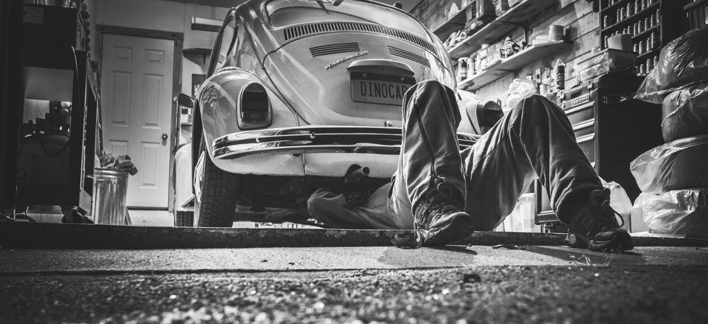

Motoryzacja
Od zawsze interesowałem się samochodami. Jak byłem mały, to bawiłem
się całe dnie resorakami i ta fascynacja pojazdami we mnie nie umarła.
Dwóch moich wujków to mechanicy samochodowi. Starszy kuzyn zawsze
mi opowiadał o autach, które chciałby mieć i pokazywał mi filmy o nich.
Jak rozwijam swoje zainteresowanie? Oto kilka linków do kanałów i gier, które lubię:
-
KicksterTV
-
Miłośnicy czterech kółek
-
Car Mechanic Simulator
